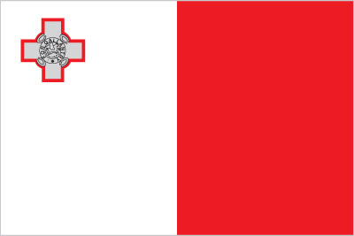

Europe :: MALTA
Introduction :: MALTA
-
With a civilization that dates back thousands of years, Malta boasts some of the oldest megalithic sites in the world. Situated in the center of the Mediterranean, Malta’s islands have long served as a strategic military asset, with the islands at various times having come under control of the Phoenicians, Carthaginians, Greeks, Romans,
Geography :: MALTA
-
Southern Europe, islands in the Mediterranean Sea, south of Sicily (Italy)35 50 N, 14 35 EEuropetotal: 316 sq kmland: 316 sq kmwater: 0 sq kmcountry comparison to the world: 209slightly less than twice the size of Washington, DC0 km196.8 km (excludes 56 km for the island of Gozo)territorial sea: 12 nmcontiguous zone: 24 nmcontinental shelf: 200-m depth or to the depth of exploitationexclusive fishing zone: 25 nmMediterranean; mild, rainy winters; hot, dry summersmostly low, rocky, flat to dissected plains; many coastal cliffsmean elevation: NAelevation extremes: lowest point: Mediterranean Sea 0 mhighest point: Ta'Dmejrek on Dingli Cliffs 253 mlimestone, salt, arable landagricultural land: 32.3%arable land 28.4%; permanent crops 3.9%; permanent pasture 0%forest: 0.9%other: 66.8% (2011 est.)35 sq km (2012)most of the population lives on the eastern half of Malta, the largest of the three inhabited islandsoccasional droughtslimited natural freshwater resources; increasing reliance on desalinationparty to: Air Pollution, Biodiversity, Climate Change, Climate Change-Kyoto Protocol, Desertification, Endangered Species, Hazardous Wastes, Law of the Sea, Marine Dumping, Ozone Layer Protection, Ship Pollution, Wetlandssigned, but not ratified: none of the selected agreementsthe country comprises an archipelago, with only the three largest islands (Malta, Ghawdex or Gozo, and Kemmuna or Comino) inhabited; numerous bays provide good harbors; Malta and Tunisia are discussing the commercial exploitation of the continental shelf between their countries, particularly for oil exploration
People and Society :: MALTA
-
416,338 (July 2017 est.)country comparison to the world: 175noun: Maltese (singular and plural)adjective: MalteseMaltese (descendants of ancient Carthaginians and Phoenicians with strong elements of Italian and other Mediterranean stock)Maltese (official) 90.1%, English (official) 6%, multilingual 3%, other 0.9% (2005 est.)Roman Catholic (official) more than 90% (2006 est.)0-14 years: 15.04% (male 32,128/female 30,490)15-24 years: 11.44% (male 24,471/female 23,142)25-54 years: 39.98% (male 85,158/female 81,303)55-64 years: 13.98% (male 28,919/female 29,298)65 years and over: 19.56% (male 36,743/female 44,686) (2017 est.)total dependency ratio: 48.8youth dependency ratio: 21.4elderly dependency ratio: 27.3potential support ratio: 3.7 (2015 est.)total: 41.8 yearsmale: 40.8 yearsfemale: 43 years (2017 est.)country comparison to the world: 360.26% (2017 est.)country comparison to the world: 17110.1 births/1,000 population (2017 est.)country comparison to the world: 1929.4 deaths/1,000 population (2017 est.)country comparison to the world: 592 migrant(s)/1,000 population (2017 est.)country comparison to the world: 48most of the population lives on the eastern half of Malta, the largest of the three inhabited islandsurban population: 95.6% of total population (2017)rate of urbanization: 0.32% annual rate of change (2015-20 est.)VALLETTA (capital) 197,000 (2014)at birth: 1.06 male(s)/female0-14 years: 1.05 male(s)/female15-24 years: 1.06 male(s)/female25-54 years: 1.05 male(s)/female55-64 years: 0.98 male(s)/female65 years and over: 0.81 male(s)/femaletotal population: 0.99 male(s)/female (2016 est.)26.9 yearsnote: data refer to the average of the different childbearing ages of first-order births (2010 est.)9 deaths/100,000 live births (2015 est.)country comparison to the world: 155total: 3.5 deaths/1,000 live birthsmale: 3.9 deaths/1,000 live birthsfemale: 3.1 deaths/1,000 live births (2017 est.)country comparison to the world: 203total population: 80.5 yearsmale: 78.1 yearsfemale: 83 years (2017 est.)country comparison to the world: 391.55 children born/woman (2017 est.)country comparison to the world: 1909.7% of GDP (2014)country comparison to the world: 283.91 physicians/1,000 population (2015)4.8 beds/1,000 population (2012)improved:urban: 100% of populationrural: 100% of populationtotal: 100% of populationunimproved:urban: 0% of populationrural: 0% of populationtotal: 0% of population (2015 est.)improved:urban: 100% of populationrural: 100% of populationtotal: 100% of populationunimproved:urban: 0% of populationrural: 0% of populationtotal: 0% of population (2015 est.)0.1% (2016 est.)country comparison to the world: 109<500 (2016 est.)<100 (2016 est.)28.9% (2016)country comparison to the world: 288.3% of GDP (2013)country comparison to the world: 23definition: age 15 and over can read and writetotal population: 94.4%male: 93.1%female: 95.8% (2015 est.)total: 15 yearsmale: 15 yearsfemale: 15 years (2015)total: 11.8%male: 13.9%female: 9.4% (2015 est.)country comparison to the world: 82
Government :: MALTA
-
conventional long form: Republic of Maltaconventional short form: Maltalocal long form: Repubblika ta' Maltalocal short form: Maltaetymology: the ancient Greeks called the island "Melite" meaning "honey-sweet" from the Greek word "meli" meaning "honey" and referring to the island's honey productionparliamentary republicname: Vallettageographic coordinates: 35 53 N, 14 30 Etime difference: UTC+1 (6 hours ahead of Washington, DC, during Standard Time)daylight saving time: +1hr, begins last Sunday in March; ends last Sunday in October68 localities (Il-lokalita); Attard, Balzan, Birgu, Birkirkara, Birzebbuga, Bormla, Dingli, Fgura, Floriana, Fontana, Ghajnsielem, Gharb, Gharghur, Ghasri, Ghaxaq, Gudja, Gzira, Hamrun, Iklin, Imdina, Imgarr, Imqabba, Imsida, Imtarfa, Isla, Kalkara, Kercem, Kirkop, Lija, Luqa, Marsa, Marsaskala, Marsaxlokk, Mellieha, Mosta, Munxar, Nadur, Naxxar, Paola, Pembroke, Pieta, Qala, Qormi, Qrendi, Rabat, Rabat (Ghawdex), Safi, San Giljan/Saint Julian, San Gwann/Saint John, San Lawrenz/Saint Lawrence, Sannat, San Pawl il-Bahar/Saint Paul's Bay, Santa Lucija/Saint Lucia, Santa Venera/Saint Venera, Siggiewi, Sliema, Swieqi, Tarxien, Ta' Xbiex, Valletta, Xaghra, Xewkija, Xghajra, Zabbar, Zebbug, Zebbug (Ghawdex), Zejtun, Zurrieq21 September 1964 (from the UK)Independence Day, 21 September (1964); Republic Day, 13 December (1974)history: many previous; latest adopted 21 September 1964amendments: proposals (Acts of Parliament) require at least two-thirds majority vote by the House of Representatives; passage of "Acts" requires majority vote by referendum, followed by final majority vote by the House and assent by the president of the republic; amended many times, last in 2016 (2017)mixed legal system of English common law and civil law based on the Roman and Napoleonic civil codesaccepts compulsory ICJ jurisdiction with reservations; accepts ICCt jurisdictioncitizenship by birth: nocitizenship by descent only: at least one parent must be a citizen of Maltadual citizenship recognized: noresidency requirement for naturalization: 5 years18 years of age (16 in local council elections); universalchief of state: President Marie-Louise Coleiro PRECA (since 4 April 2014)head of government: Prime Minister Joseph MUSCAT (since 11 March 2013)cabinet: Cabinet appointed by the president on the advice of the prime ministerelections/appointments: president indirectly elected by the House of Representatives for a 5-year term (1-term limit); election last held on 4 April 2014 (next to be held by April 2019); following legislative elections, the leader of the majority party or majority coalition usually appointed prime minister by the president for a 5-year term; deputy prime minister appointed by the president on the advice of the prime ministerelection results: Marie-Louise Coleiro PRECA (PL) elected president; House of Representatives vote - unanimous; Joseph MUSCAT (PL) reappointed prime ministerdescription: unicameral House of Representatives or Il-Kamra Tad-Deputati, a component of the Parliament of Malta (normally 65 seats but can include at-large members; members directly elected in 5 multi-seat constituencies by proportional representation vote; members serve 5-year terms); note - the parliament elected in 2013 had 69 seats; an additional two seats were added in 2016 by the Constitutional Court to correct for mistakes made in the 2013 vote-counting processelections: last held on 3 June 2017 (next to be held in 2022); note - Prime Minister MUSCAT called for early elections amid corruption allegationselection results: percent of vote by party - PL 55.0%, PN 43.7%, other 1.3%; seats by party - PL 37 PN 30; note - PN was awarded two additional seats for a total of 30 in accordance with the proportionality provisions specified in the constitution; PD candidates ran under the PN listhighest court(s): Court of Appeal (consists of either 1 or 3 judges); Constitutional Court (consists of 3 judges); Court of Criminal Appeal (consists of either 1 or 3 judges)judge selection and term of office: Court of Appeal and Constitutional Court judges appointed by the president, usually upon the advice of the prime minister; judges of both courts serve until age 65subordinate courts: Civil Court (divided into the General Jurisdiction Section, Family Section, and Voluntary Section); Criminal Court; Court of Magistrates; Gozo Courts (for the islands of Gozo and Comino}Democratic Party or PD [Anthony BUTTIGIEG]Labor Party or PL [Joseph MUSCAT]Nationalist Party or PN [Adrian DELIA]Alliance of Liberal Democrats Malta (Alleanza Liberali-Demokratika Malta) or ALDM (for divorce, abortion, gay marriage, women's rights)Alliance for Change (Alleanza Bidla) (Euro-skeptic)Together for a Better Environment (Flimkien Ghal-Ambjent Ahjar) or FAAother: environmental groupsAustralia Group, C, CD, CE, EAPC, EBRD, ECB, EIB, EMU, EU, FAO, IAEA, IBRD, ICAO, ICC (NGOs), ICCt, ICRM, IDA, IFAD, IFC, IFRCS, ILO, IMF, IMO, IMSO, Interpol, IOC, IOM, IPU, ISO, ITSO, ITU, ITUC (NGOs), MIGA, NSG, OAS (observer), OPCW, OSCE, PCA, PFP, Schengen Convention, UN, UNCTAD, UNESCO, UNIDO, Union Latina (observer), UNWTO, UPU, WCO, WHO, WIPO, WMO, WTOchief of mission: Ambassador Pierre Clive AGIUS (since 2 March 2016)chancery: 2017 Connecticut Avenue NW, Washington, DC 20008telephone: [1] (202) 462-3611 through 3612FAX: [1] (202) 387-5470chief of mission: Ambassador G. Kathleen HILL (since 25 February 2016)embassy: Ta' Qali National Park, Attard, ATD 4000mailing address: 5800 Valletta Place, Dulles, VA 20189telephone: [356] 2561 4000FAX: [356] 2124 3229two equal vertical bands of white (hoist side) and red; in the upper hoist-side corner is a representation of the George Cross, edged in red; according to legend, the colors are taken from the red and white checkered banner of Count Roger of Sicily who removed a bi-colored corner and granted it to Malta in 1091; an uncontested explanation is that the colors are those of the Knights of Saint John who ruled Malta from 1530 to 1798; in 1942, King George VI of the UK awarded the George Cross to the islanders for their exceptional bravery and gallantry in World War II; since independence in 1964, the George Cross bordered in red has appeared directly on the white fieldMaltese eight-pointed cross; national colors: red, whitename: "L-Innu Malti" (The Maltese Anthem)lyrics/music: Dun Karm PSAILA/Robert SAMMUTnote: adopted 1945; written in the form of a prayer
Economy :: MALTA
-
Malta’s free market economy – the smallest economy in the euro-zone – relies heavily on trade in both goods and services, principally with Europe. Malta produces less than a quarter of its food needs, has limited fresh water supplies, and has few domestic energy sources. Malta's economy is dependent on foreign trade, manufacturing, and tourism. Malta joined the EU in 2004 and adopted the euro on 1 January 2008.Malta has weathered the euro-zone crisis better than most EU member states due to a low debt-to-GDP ratio and financially sound banking sector. It maintains one of the lowest unemployment rates in Europe, and growth has fully recovered since the 2009 recession. In 2014 through 2016, Malta led the euro zone in growth, expanding more than 4.5% per year.Malta’s services sector continues to grow, with sustained growth in the financial services and online gaming sectors. Advantageous tax schemes remained attractive to foreign investors, though EU discussions of anti-tax avoidance measures have raised concerns among Malta’s financial services and insurance providers, as the measures could have a significant impact on those sectors. The tourism sector also continued to grow, with 2016 showing record-breaking numbers of both air and cruise passenger arrivals.Malta’s GDP growth remains strong and is supported by a strong labor market. The government has implemented new programs, including free childcare, to encourage increased labor participation. The high cost of borrowing and small labor market remain potential constraints to future economic growth. Increasingly, other EU and European migrants are relocating to Malta for employment, though wages have remained low compared to other European countries. Inflation remains low.$17.32 billion (2016 est.)$16.21 billion (2015 est.)$14.98 billion (2014 est.)note: data are in 2016 dollarscountry comparison to the world: 150$11 billion (2016 est.)5.5% (2016 est.)7.1% (2015 est.)8.2% (2014 est.)country comparison to the world: 40$39,900 (2016 est.)$38,300 (2015 est.)$36,100 (2014 est.)note: data are in 2016 dollarscountry comparison to the world: 4431.6% of GDP (2016 est.)29.9% of GDP (2015 est.)27.3% of GDP (2014 est.)country comparison to the world: 35household consumption: 49%government consumption: 16.8%investment in fixed capital: 23.3%investment in inventories: -1%exports of goods and services: 141.4%imports of goods and services: -129.5% (2016 est.)agriculture: 1.3%industry: 10.6%services: 88.1% (2016 est.)potatoes, cauliflower, grapes, wheat, barley, tomatoes, citrus, cut flowers, green peppers; pork, milk, poultry, eggstourism, electronics, ship building and repair, construction, food and beverages, pharmaceuticals, footwear, clothing, tobacco, aviation services, financial services, information technology services-3.3% (2016 est.)country comparison to the world: 182201,300 (2016 est.)country comparison to the world: 171agriculture: 1.6%industry: 20.7%services: 77.7% (2016 est.)4.7% (2016 est.)5.4% (2015 est.)country comparison to the world: 6016.3% (2015 est.)lowest 10%: NA%highest 10%: NA%28.1 (2015)27.7 (2014)country comparison to the world: 134revenues: $4.272 billionexpenditures: $4.34 billion (2016 est.)39% of GDP (2016 est.)country comparison to the world: 44-0.6% of GDP (2016 est.)country comparison to the world: 5956% of GDP (2016 est.)60.6% of GDP (2015 est.)note: Malta reports public debt at nominal value outstanding at the end of the year, according to guidelines set out in the Maastricht Treaty for general government gross debt; the data include the following categories of government liabilities (as defined in ESA95): currency and deposits (AF.2), securities other than shares excluding financial derivatives (AF.3, excluding AF.34), and loans (AF.4); general government comprises the central government, state government, local government and social security fundscountry comparison to the world: 83calendar year0.9% (2016 est.)1.1% (2015 est.)country comparison to the world: 72-0.35% (31 December 2016 est.)-0.2% (31 December 2015)note: this is the European Central Bank's rate on the marginal lending facility, which offers overnight credit to banks in the euro areacountry comparison to the world: 1593.1% (31 December 2016 est.)3.4% (31 December 2015 est.)country comparison to the world: 167$14.56 billion (31 December 2016 est.)$13.4 billion (31 December 2015 est.)note: see entry for the EU for money supply for the entire euro area; the European Central Bank controls monetary policy for the 18 members of the Economic and Monetary Union (EMU); individual members of the EMU do not control the quantity of money circulating within their own borderscountry comparison to the world: 72$19.2 billion (31 December 2016 est.)$18.09 billion (31 December 2015 est.)country comparison to the world: 90$19.19 billion (31 December 2016 est.)$18.33 billion (31 December 2015 est.)country comparison to the world: 91$4.632 billion (31 December 2016 est.)$4.468 billion (31 December 2015 est.)$3.353 billion (31 December 2014 est.)country comparison to the world: 87$867 million (2016 est.)$539 million (2015 est.)country comparison to the world: 43$2.493 billion (2016 est.)$3.003 billion (2015 est.)country comparison to the world: 133machinery and mechanical appliances; mineral fuels, oils and petroleum products; pharmaceutical products; books and newspapers; aircraft/spacecraft and parts; toys, games, and sports equipmentUS 27.3%, Germany 13.9%, France 8.3%, Singapore 5.6%, Japan 5.2%, Hong Kong 4.3%, Italy 4.2% (2016)$4.643 billion (2016 est.)$5.057 billion (2015 est.)country comparison to the world: 125mineral fuels, oils and products; electrical machinery; aircraft/spacecraft and parts thereof; machinery and mechanical appliances; plastic and other semi-manufactured goods; vehicles and partsItaly 20.9%, Canada 10.4%, Germany 6.3%, UK 5.9%, France 4.4% (2016)$677.1 million (31 December 2016 est.)$571.7 million (31 December 2015 est.)country comparison to the world: 134$90.98 billion (September 2016 est.)$99.02 billion (31 December 2015 est.)country comparison to the world: 51$166.1 million (1 June 2016 est.)$155.5 million (1 June 2015 est.)country comparison to the world: 129$65.49 million (June 2015 est.)$64.77 million (June 2014 est.)country comparison to the world: 105euros (EUR) per US dollar -0.9214 (2016 est.)0.885 (2015 est.)0.885 (2014 est.)0.7634 (2013 est.)0.7752 (2012 est.)
Energy :: MALTA
-
electrification - total population: 100% (2016)1.228 billion kWh (2015 est.)country comparison to the world: 1472.103 billion kWh (2015 est.)country comparison to the world: 1420 kWh (2016 est.)country comparison to the world: 1711.054 billion kWh (2015 est.)country comparison to the world: 68670,000 kW (2015 est.)country comparison to the world: 13688.5% of total installed capacity (2015 est.)country comparison to the world: 630% of total installed capacity (2015 est.)country comparison to the world: 1450% of total installed capacity (2015 est.)country comparison to the world: 18812.7% of total installed capacity (2015 est.)country comparison to the world: 590 bbl/day (2016 est.)country comparison to the world: 1720 bbl/day (2014 est.)country comparison to the world: 1650 bbl/day (2014 est.)country comparison to the world: 1640 bbl (1 January 2017 es)country comparison to the world: 1700 bbl/day (2016 est.)country comparison to the world: 17742,000 bbl/day (2015 est.)country comparison to the world: 1134,031 bbl/day (2014 est.)country comparison to the world: 9943,950 bbl/day (2014 est.)country comparison to the world: 900 cu m (2016 est.)country comparison to the world: 1720 cu m (2014 est.)country comparison to the world: 2110 cu m (2014 est.)country comparison to the world: 1530 cu m (2013 est.)country comparison to the world: 1580 cu m (1 January 2014 es)country comparison to the world: 174887,700 Mt (2014 est.)country comparison to the world: 168
Communications :: MALTA
-
total subscriptions: 234,383subscriptions per 100 inhabitants: 56 (July 2016 est.)country comparison to the world: 126total: 539,589subscriptions per 100 inhabitants: 130 (July 2016 est.)country comparison to the world: 169general assessment: automatic system featuring submarine cable and microwave radio relay between islandsdomestic: combined fixed-line and mobile-cellular subscribership exceeds 185 per 100 personsinternational: country code - 356; submarine cable connects to Italy; satellite earth station - 1 Intelsat (Atlantic Ocean) (2016)2 publicly owned TV stations, Television Malta broadcasting nationally plus an educational channel; several privately owned national television stations, 2 of which are owned by political parties; Italian and British broadcast programs are available; multi-channel cable and satellite TV services are available; publicly owned radio broadcaster operates 3 stations; roughly 20 commercial radio stations (2017).mttotal: 320,902percent of population: 77.3% (July 2016 est.)country comparison to the world: 160
Transportation :: MALTA
-
number of registered air carriers: 9inventory of registered aircraft operated by air carriers: 28annual passenger traffic on registered air carriers: 1,583,046annual freight traffic on registered air carriers: 3.352 million mt-km (2015)9H (2016)1 (2013)country comparison to the world: 225total: 1over 3,047 m: 1 (2017)2 (2013)total: 3,096 kmpaved: 2,704 kmunpaved: 392 km (2008)country comparison to the world: 164total: 1,650by type: bulk carrier 544, cargo 351, carrier 1, chemical tanker 324, container 117, liquefied gas 36, passenger 50, passenger/cargo 18, petroleum tanker 160, refrigerated cargo 7, roll on/roll off 22, specialized tanker 2, vehicle carrier 18foreign-owned: 1,437 (Angola 7, Azerbaijan 1, Belgium 7, Bermuda 15, Bulgaria 8, Canada 5, China 6, Croatia 6, Cyprus 32, Denmark 34, Egypt 1, Estonia 16, Finland 3, France 8, Germany 135, Greece 469, Hong Kong 4, India 3, Iran 48, Ireland 4, Israel 3, Italy 45, Japan 5, Kuwait 3, Latvia 8, Lebanon 6, Libya 5, Luxembourg 3, Malaysia 1, Monaco 3, Netherlands 3, Norway 96, Oman 5, Poland 21, Portugal 3, Romania 7, Russia 45, Saudi Arabia 2, Singapore 4, Slovenia 4, South Korea 2, Spain 8, Sweden 1, Switzerland 20, Syria 4, Turkey 233, UAE 1, UK 21, Ukraine 29, US 34)registered in other countries: 2 (Panama 2) (2010)country comparison to the world: 4major seaport(s): Marsaxlokk (Malta Freeport), Vallettacontainer port(s) (TEUs): Marsaxlokk (2,360,000)
Military and Security :: MALTA
-
0.53% of GDP (2016)0.5% of GDP (2015)0.51% of GDP (2014)0.53% of GDP (2013)0.54% of GDP (2012)country comparison to the world: 122Armed Forces of Malta (AFM, includes land, maritime, and air elements) (2017)18 years of age for voluntary military service; no conscription (2017)
Transnational Issues :: MALTA
-
noneminor transshipment point for hashish from North Africa to Western Europe